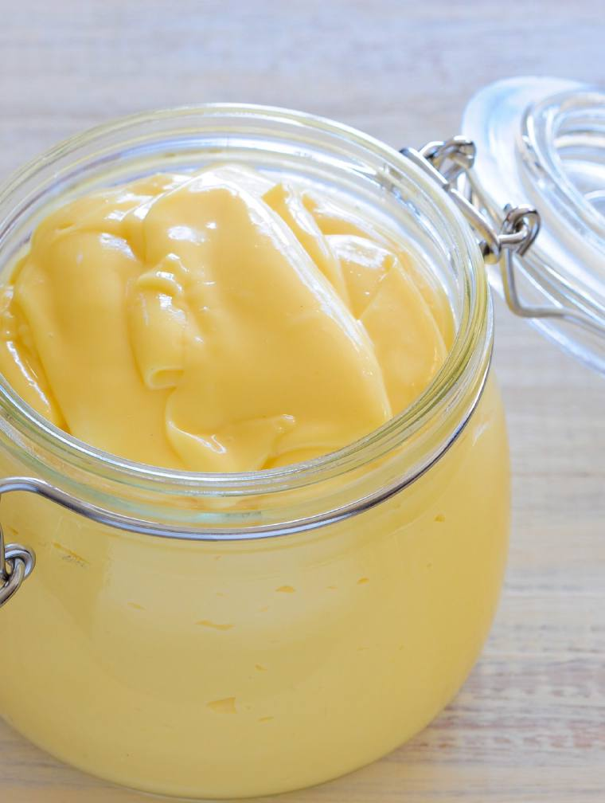

Sauces

Sauces
Mayonnaise
Préparation : 10 min
Ingrédients (pour 6 personnes)
- 1 jaune d’œuf
- 17 cl d’huile neutre
- 1 cuillère à café de moutarde
- 1 cuillère à café de vinaigre ou jus de citron
- sel, poivre
Quantités adaptées. Les temps de cuisson ne sont pas recalculés.
- Sortir les ingrédients pour qu’ils soient à même température.
- Dans un bol à fond rond, fouetter jaune, moutarde, vinaigre, sel et poivre.
- Verser l’huile goutte à goutte en fouettant, puis en filet quand la sauce a pris.
- Fouetter encore un peu pour la raffermir et mettre au froid.
À conserver au froid, jamais au placard
Au réfrigérateur entre 0 et 4 °C : 24 heures au plus. Ne pas congeler. Œuf cru : préparer au plus près du repas, jamais pour les jeunes enfants, femmes enceintes, personnes âgées ou fragiles, sauf avec de l’œuf pasteurisé.
AstuceTournée ? La reprendre en fouettant, goutte à goutte, sur une cuillerée d’eau. Ne jamais remonter une mayonnaise sur celle de la veille.
D’après les sauces émulsionnées, École des métiers Dijon Métropole. Proportions d’une fiche de sauce tartare professionnelle : 6 jaunes par litre d’huile.